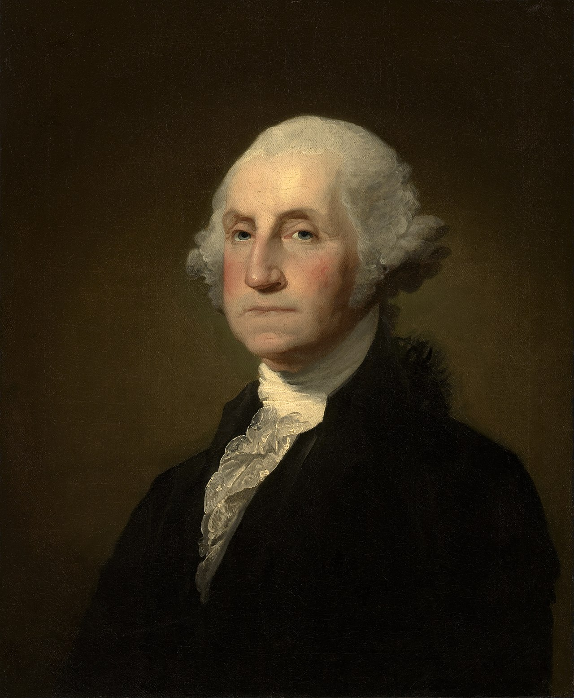

George Washington, First President of the United States

Born 1732, died 1799. Washington led the colonists in the American Revolutionary War to win independence from Great Britain. He was the father of the new country and laid the foundation of American democracy. Because of his importance, Borglum chose Washington to be the most prominent figure on the mountain and represent the birth of the United States. National Park Service